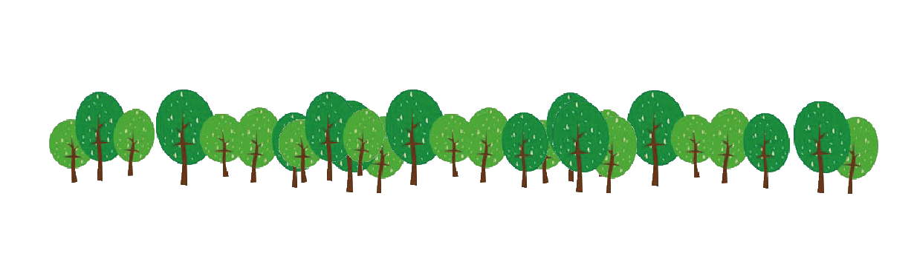
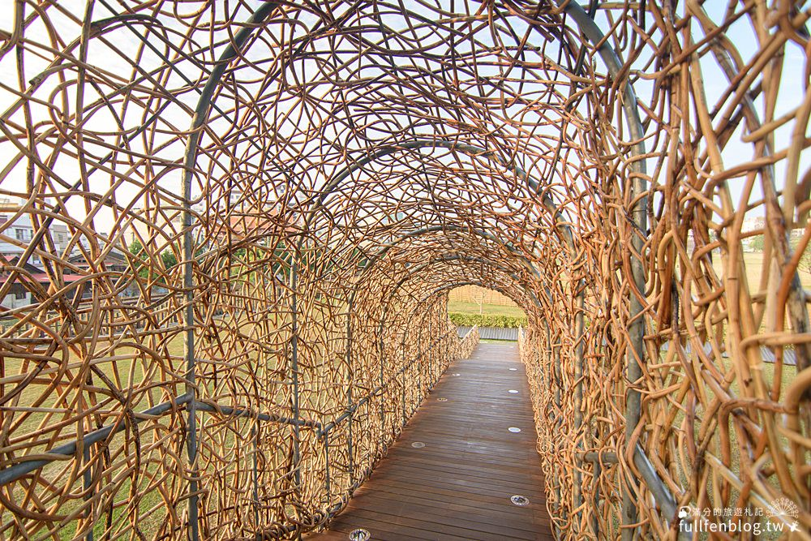
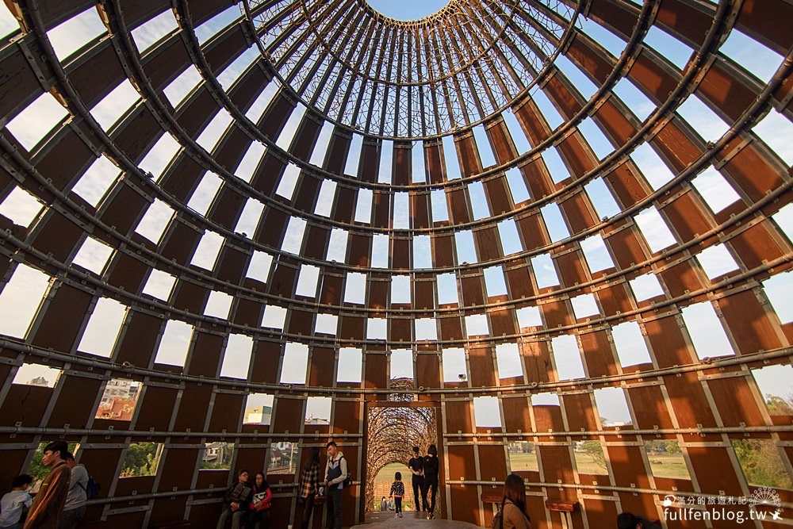
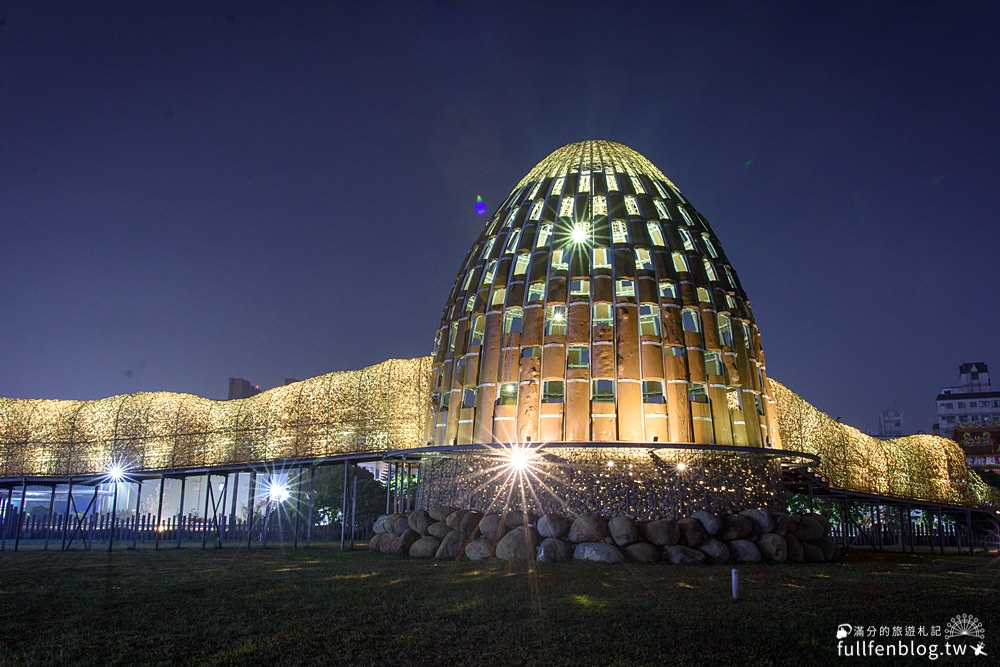
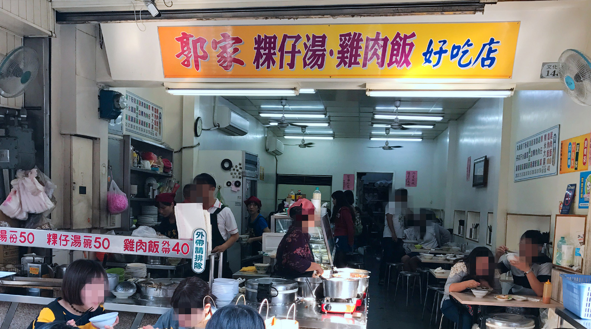
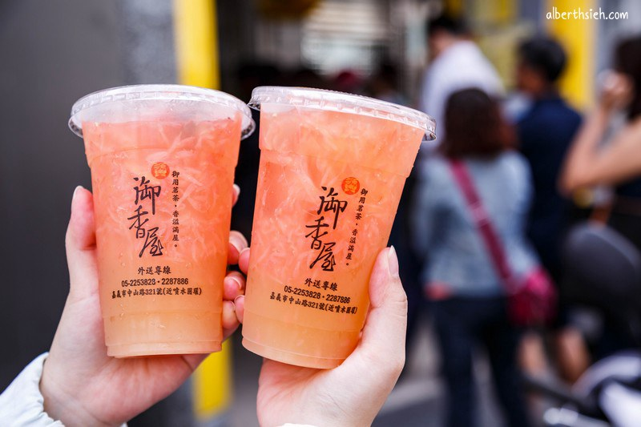
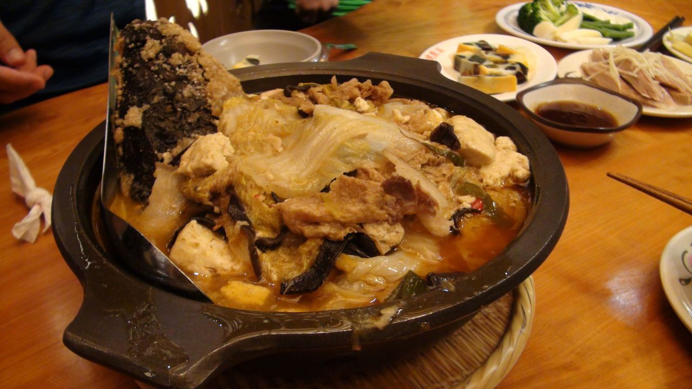

藝術家「王文志」先生，起初的發想是來自於阿里山高聳的神木以及鐵道的歷史，將大量的樹木綑綁起來環繞，都是利用黃藤所編織而成。




走到黃藤隧道中，就如同被樹枝層層包圍住就像蟲被包覆在繭裡頭，等待破繭而出，羽化成蝶，展翅高飛的意象。

主體內還擺了一個漂流木，意謂著不起眼的漂流木也能賦予新生命，呈現藝術創作的人文深度，飲水思源不忘本。

白天有舒服的森林純淨，晚上還有七彩的燈光加持下將這蛋塔造型點綴的夢幻浪漫，寧靜浪漫，令人目不暇給，美侖美奐。

郭家火雞肉飯
位於文化路夜市裡的【郭家雞肉飯、粿仔湯好吃店】，營業時間長，無論宵夜或是早餐時間都可以來吃。
涼麵
加美乃滋是嘉義在地的特別吃法！不只如此，嘉義涼麵另一最大特色就是使用寬扁麵麵條，而非一般常見的油麵麵條，吃起來口感很不一樣。

御香屋
絕大多數的民眾都是為了葡萄柚綠茶而來。傳說中滿滿果肉的葡萄柚綠茶，透過杯身裡頭的果肉無所遁形！

林聰明砂鍋魚頭
超過八小時特熬的獨家極品高湯，魚頭採用水庫頂級新鮮運送，自鰓上取豐厚的魚頭，炸至金黃色，外表香酥肉汁美味。
搭乘火車
於嘉義火車站(或後火車站)下車後，搭乘往蘭潭之市區66路(光臨我嘉線)的市區公車，於檜意森活村站下車步行約15分鐘即抵達。
搭乘高鐵
搭乘高鐵於高鐵嘉義站下車後可搭乘7211與7212brt於台鐵嘉義後站下車後，搭乘往蘭潭之市區66路(光臨我嘉線)的市區公車，於檜意森活村站下車後步行約15分鐘即抵達。
搭乘火車
於嘉義火車站(或後火車站)下車後，搭乘往蘭潭之市區66路(光臨我嘉線)的市區公車，於檜意森活村站下車步行約15分鐘即抵達。
搭乘高鐵
搭乘高鐵於高鐵嘉義站下車後可搭乘7211與7212brt於台鐵嘉義後站下車後，搭乘往蘭潭之市區66路(光臨我嘉線)的市區公車，於檜意森活村站下車後步行約15分鐘即抵達。